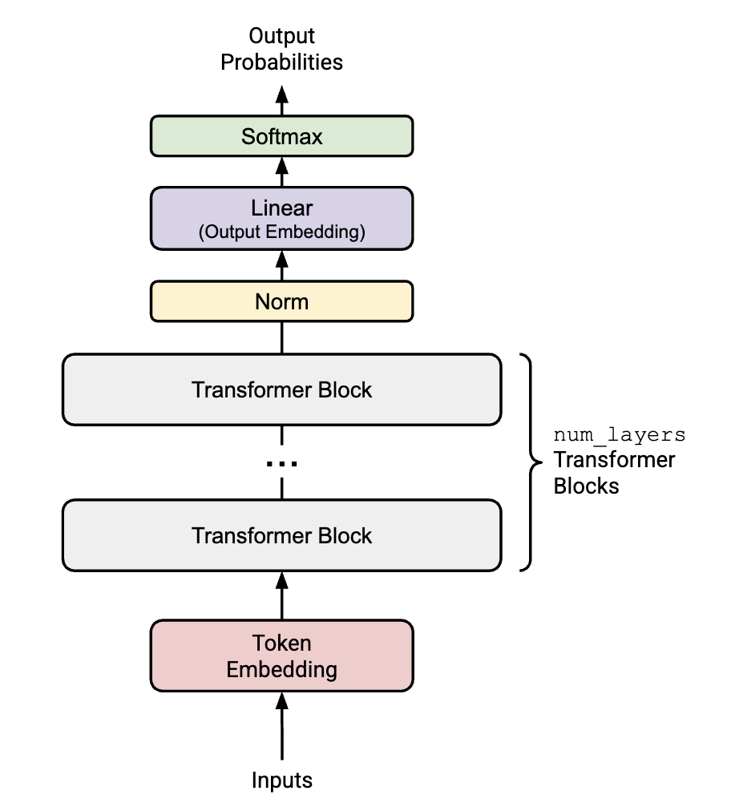
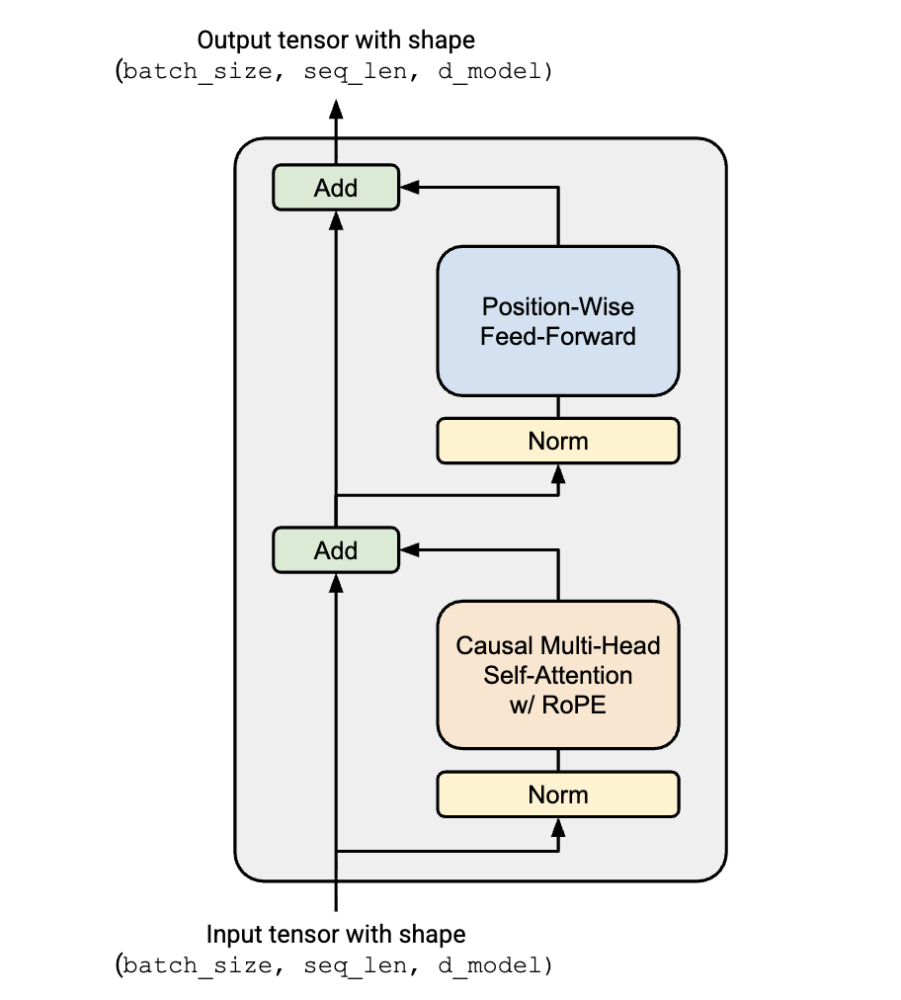
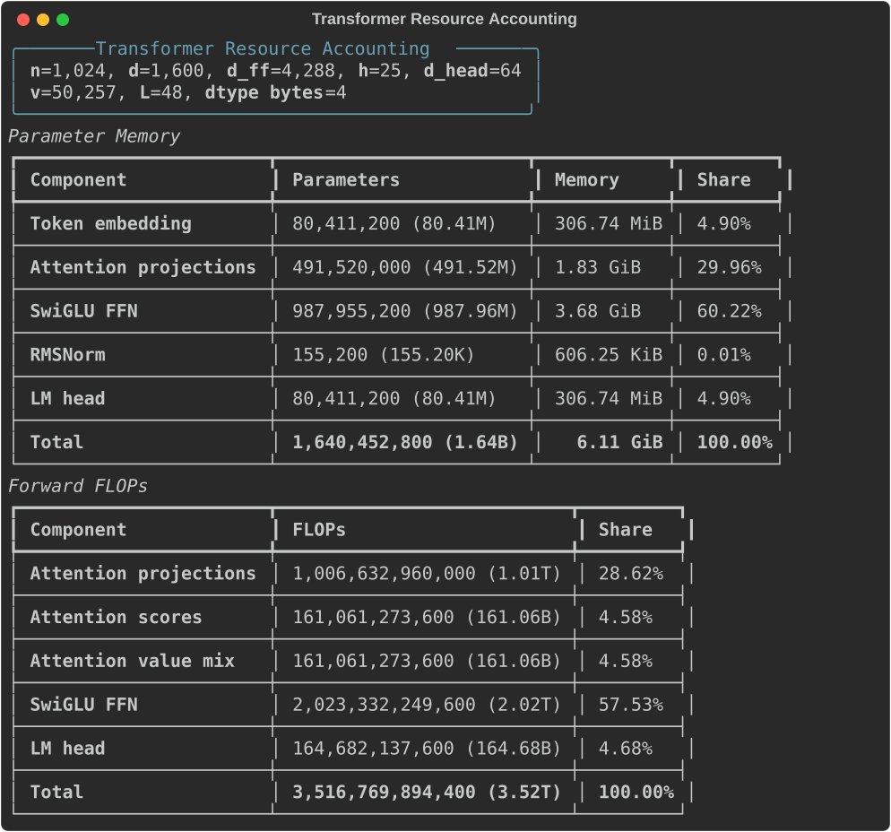
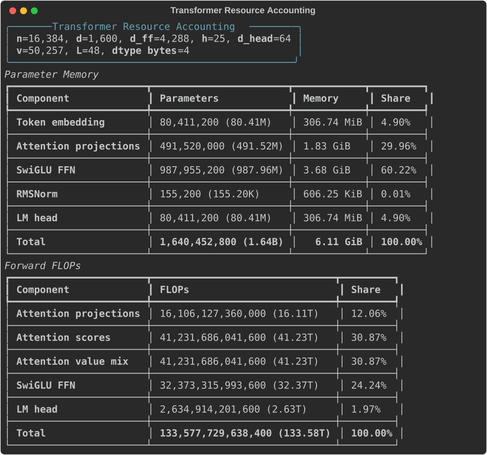

Introduction
In the last section, we converted input text into token IDs. Before using these token IDs, we need to build a model that takes them as input:
$$ \text{input: (batch, sequence length)} \xrightarrow{\text{model}} \text{output: (batch, sequence length, vocab)} $$Formally, the input and output spaces can be described as:
$$ \text{input} \in \mathbb{N}^{\text{batch} \times \text{sequence length}}, \quad \text{output} \in \mathbb{R}^{\text{batch} \times \text{sequence length} \times \text{vocab}} $$In this part of the assignment, we focus on the Transformer architecture and build one from scratch!
Transformer LM
The first figure below shows the structure of a modern Transformer LM, and the second figure shows the internal structure of a Transformer block.

An overview of a Transformer model

The structure of a Transformer block
Next, we will look at each component in detail and implement it from scratch.
Since this assignment is already long, the course staff defers the details of parameter initialization to assignment 3. For this assignment, they specify the following initialization configuration:
-
Linear weights: $\mathcal{N}\left(\mu = 0, \sigma^2 = \frac{2}{d_{in} + d_{out}}\right)$ truncated at $[-3\sigma, 3\sigma]$
-
Embedding: $\mathcal{N}(\mu = 0, \sigma^2 = 1)$ truncated at $[-3, 3]$
-
RMSNorm: $1$
Modules
Linear Module
Mathematical notation:
$$ y = W x $$The forward function:
class Linear(nn.Module):
def forward(
self,
x: Float[torch.Tensor, "... d_in"],
) -> Float[torch.Tensor, "... d_out"]: ...
Note that we do not include a bias term, following most modern LLMs.
Embedding Module
Mathematical notation:
$$ y = \text{Embeddings[}x\text{]} $$The forward function:
class Embedding(nn.Module):
def forward(
self,
token_ids: Int[torch.Tensor, "batch seqlen"],
) -> Float[torch.Tensor, "batch seqlen d_model"]:
RMSNorm: Root Mean Square Layer Normalization
Mathematical notation:
$$ \begin{align*} \text{RMSNorm}(a_i) &= \frac{a_i}{\text{RMS}(a)} g_i \\ \text{RMS}(a) &= \sqrt{\left(\frac{1}{d_{model}}\sum_{i=1}^{d_{model}} a_i^2\right) + \varepsilon} \end{align*} $$where $a \in \mathbb{R}^{d_{model}}$ is the input activation vector, and $g \in \mathbb{R}^{d_{model}}$ is a vector of learnable “gain” parameters.
The forward function:
class RMSNorm(nn.Module):
def forward(
self,
x: Float[torch.Tensor, "... d_model"],
) -> Float[torch.Tensor, "... d_model"]: ...
SwiGLU: Sigmoid Linear Unit + Gated Linear Unit
We will implement the position-wise feed-forward network in a Transformer block with a SwiGLU activation function, which combines SiLU and GLU:
$$ \text{FFN}(x) = \text{SwiGLU}(x, W_1, W_2, W_3) = \underbrace{W_2}_{\text{down proj}} (\underbrace{\text{SiLU}(W_1 x)}_{\text{gate proj}} \odot \underbrace{W_3 x}_{\text{up proj}}) $$where $x \in \mathbb{R}^{d_{\text{model}}}$, $W_1, W_3 \in \mathbb{R}^{d_{\text{ff}} \times d_{\text{model}}}$, $W_2 \in \mathbb{R}^{d_{\text{model}} \times d_{\text{ff}}}$, $\text{FFN}(x) \in \mathbb{R}^{d_{\text{model}}}$, and canonically, $d_{\text{ff}} = \frac{8}{3} d_{\text{model}}$.
Some heuristic arguments from the writeup:
-
GLUs are suggested to “reduce the vanishing gradient problem for deep architectures by providing a linear path for the gradients while retaining non-linear capabilities.” To be specific:
$$ g := \sigma(W_gx), v := W_vx \\ y=g\odot v $$Then:
$$ \frac{\partial y}{\partial x}= \frac{\partial y}{\partial g} \frac{\partial g}{\partial x} + \frac{\partial y}{\partial v} \frac{\partial v}{\partial x} = \underbrace{\operatorname{diag}(v) \sigma^\prime(W_g x) W_g}_{g \text{ channel}} + \underbrace{\operatorname{diag}(g) W_v}_{v \text{ channel}} $$Here, $\sigma^\prime (W_g x) = \sigma (W_g x) \odot (1 - \sigma(W_g x)) \le 0.25$ elementwise when $\sigma(x) = \frac{1}{1 + e^{-x}}$. Therefore, the $v$ channel provides a linear path for gradients.
-
It is fine to round the dimensions to a nearby multiple of 64 for hardware efficiency.
-
Keep an empirical perspective: the exact dimension choice is ultimately an implementation and performance tradeoff.
class SwiGLU(nn.Module):
def forward(
self,
x: Float[torch.Tensor, "... d_model"],
) -> Float[torch.Tensor, "... d_model"]: ...
RoPE: Rotary Positional Embeddings
The idea behind RoPE is to implement relative positional encoding via absolute positional encoding.
Suppose that we have a query vector $q$ at position $m$ and a key vector $k$ at position $n$. Our positional embedding function is $f: \mathbb{R}^{d_{\text{model}}} \times \mathbb{N} \rightarrow \mathbb{R}^{d_{\text{model}}}$:
$$ \tilde{q}_m = f(q, m), \tilde{k}_n = f(k, n) $$Then absolute position information is injected into $\tilde{q}_m$ and $\tilde{k}_n$. However, we want the inner product in the attention layer to depend on relative position information:
$$ \langle \tilde{q}_m, \tilde{k}_n \rangle = \langle f(q, m), f(k, n) \rangle = g(q, k, m - n) $$When $d_{\text{model}} = 2$ and we interpret $q$ as a complex number, a solution is:
$$ f(q, m) = q e^{i m \theta} = \begin{pmatrix} \cos(m\theta) & -\sin(m\theta) \\ \sin(m\theta) & \cos(m\theta) \end{pmatrix} \begin{pmatrix} q_0 \\ q_1 \end{pmatrix}, $$which rotates the vector $q$ counterclockwise by an angle $m\theta$.
If $d_{\text{model}}$ is a multiple of $2$, then we can stack this 2D rotation to get the full positional embedding:
$$ f(q, m) = \underbrace{ \begin{pmatrix} \cos m\theta_0 & -\sin m\theta_0 & \cdots & 0 & 0 \\ \sin m\theta_0 & \cos m\theta_0 & \cdots & 0 & 0 \\ \vdots & \vdots & \ddots & \vdots & \vdots \\ 0 & 0 & \cdots & \cos m\theta_{d/2-1} & -\sin m\theta_{d/2-1} \\ 0 & 0 & \cdots & \sin m\theta_{d/2-1} & \cos m\theta_{d/2-1} \end{pmatrix} }_{\mathcal{R}_m} \begin{pmatrix} q_0 \\ q_1 \\ \vdots \\ q_{d-2} \\ q_{d-1} \end{pmatrix} $$Then relative position information is encoded in the attention weights:
$$ (\mathcal{R}_m q)^\top (\mathcal{R}_n k) = q^\top \mathcal{R}_m^\top \mathcal{R}_n k = q^\top \mathcal{R}_{n-m} k $$class RoPE(nn.Module):
def forward(
self,
x: Float[torch.Tensor, "... seqlen d_k"],
token_positions: Int[torch.Tensor, "... seqlen"],
) -> Float[torch.Tensor, "... seqlen d_k"]: ...
SDPA: Scaled Dot-Product Attention
Scaled dot-product attention is defined as:
$$ \text{Attention}(Q, K, V) = \text{softmax}\left( \frac{QK^T}{\sqrt{d_k}} \right) V $$where $Q \in \mathbb{R}^{n \times d_k}, K \in \mathbb{R}^{m \times d_k}, V \in \mathbb{R}^{m \times d_v}$.
class ScaledDotProductAttention(nn.Module):
def forward(
self,
Q: Float[torch.Tensor, "... queries d_k"],
K: Float[torch.Tensor, "... keys d_k"],
V: Float[torch.Tensor, "... keys d_v"],
mask: Bool[torch.Tensor, "... queries keys"] | None = None,
) -> Float[torch.Tensor, "... queries d_v"]: ...
MHA: Causal Multi-Head Self-Attention With RoPE
Mathematically, multi-head attention is defined as follows:
$$ \text{MultiHead}(Q, K, V) = \text{Concat}(\text{head}_1, \ldots, \text{head}_h) \\ \text{for } \text{head}_i = \text{Attention}(Q_i, K_i, V_i) $$Multi-head self-attention is then defined as:
$$ \text{MultiHeadSelfAttention}(x) = W_O \text{MultiHeadAttention}(W_Qx, W_Kx, W_Vx) \\ $$Some implementation details:
-
Causal: apply a lower triangular
maskto prevent the current query from attending to future tokens. (1: attend, 0: ignore) -
RoPE: add positional information to queries and keys with RoPE. Each head is processed independently. Do not apply RoPE to value vectors.
class MultiheadSelfAttentionWithRoPE(nn.Module):
def forward(
self,
x: Float[torch.Tensor, "... seqlen d_model"],
token_positions: Int[torch.Tensor, "... seqlen"],
) -> Float[torch.Tensor, "... seqlen d_model"]:
Transformer Block
The structure of a Transformer block is shown here.
class TransformerBlock(nn.Module):
def forward(
self,
x: Float[torch.Tensor, "... seqlen d_model"],
token_positions: Int[torch.Tensor, "... seqlen"],
mask: Bool[torch.Tensor, "... seqlen seqlen"] | None = None,
) -> Float[torch.Tensor, "... seqlen d_model"]:
x = x + self.attn(self.ln1(x), token_positions, mask)
x = x + self.ffn(self.ln2(x))
return x
Transformer LM
Putting all these components together gives us the full Transformer model:
class Transformer(nn.Module):
def forward(
self,
x: Int[torch.Tensor, "batch seqlen"],
token_positions: Int[torch.Tensor, "batch seqlen"],
) -> Float[torch.Tensor, "batch seqlen vocab"]:
x = self.token_embeddings(x)
for layer in self.layers:
x = layer(x, token_positions)
x = self.ln_final(x)
x = self.lm_head(x)
return x
Resource Accounting
Here, we account for the compute and memory used by a Transformer forward pass. Following the official writeup, we focus on matrix multiplications, since they dominate the FLOPs in a Transformer.
The core rule is:
$$ A \in \mathbb{R}^{m \times n},\quad B \in \mathbb{R}^{n \times p} \quad\Longrightarrow\quad AB \text{ costs } 2mnp \text{ FLOPs}. $$For now, we ignore the $\text{batch}$ dimension and assume that the input sequence has length $n$.
Notation:
-
$n$: input sequence length;
-
$d$: dimension of the model;
-
$d_{\text{ff}}$: dimension of the FFN up projection;
-
$h$: number of attention heads;
-
$d^{\prime} = d / h$: dimension per attention head;
-
$v$: vocabulary size;
-
$L$: number of layers;
Compute
The embedding layer is just a lookup, so we count it as 0 FLOPs under this matrix-multiply accounting. We also ignore RMSNorm, RoPE, softmax, masking, residual additions, and activation functions in the main formula. These operations matter in real implementations, but their FLOP counts are usually smaller than the large matrix multiplications below.
Let $X \in \mathbb{R}^{n \times d}$ be the input to one Transformer block. The query, key, and value projections are: Each one multiplies an $(n \times d)$ matrix by a $(d \times d)$ matrix, so each costs $2nd^2$ FLOPs.
Together: For attention scores, each head computes: One head costs $2n^2d^{\prime}$ FLOPs.
Across $h$ heads: For the weighted value sum, each head computes: Across all heads, this also costs: Finally, the output projection multiplies an $(n \times d)$ matrix by a $(d \times d)$ matrix: which costs: Therefore, attention costs:Attention: \(8nd^2 + 4n^2d\)
For SwiGLU, the three matrix multiplications are: where: The first two projections each cost: The down projection also costs: Therefore, the FFN costs:FFN: \(6ndd_{\text{ff}}\)
The LM head multiplies: where $X \in \mathbb{R}^{n \times d}$ and $W_{\text{lm}} \in \mathbb{R}^{d \times v}$.
Therefore:LM Head: \(2ndv\)
For one Transformer block:
$$ \text{block FLOPs} = 8nd^2 + 4n^2d + 6ndd_{\text{ff}}. $$For $L$ layers plus the final LM head:
$$ \begin{align*} \text{total FLOPs} = L(8nd^2 + 4n^2d + 6ndd_{\text{ff}}) + 2ndv. \end{align*} $$This formula makes the dominant terms easier to see:
- Attention has a quadratic sequence-length term: $4n^2d$.
- Projection and FFN costs scale linearly with sequence length but quadratically, or near-quadratically, with width: $8nd^2$ and $6ndd_{\text{ff}}$.
- The LM head can be expensive when the vocabulary is large: $2ndv$.
Memory
For memory, we first count parameter memory.
Assume all parameters use float32, so each scalar takes $4$ bytes.
| Component | Parameters | Memory |
|---|---|---|
| Token embedding | $vd$ | $4vd$ bytes |
| Attention projections per layer ($W_Q, W_K, W_V, W_O$) | $4d^2$ | $16d^2$ bytes |
| SwiGLU FFN per layer ($W_1, W_2, W_3$) | $3dd_{\text{ff}}$ | $12dd_{\text{ff}}$ bytes |
| RMSNorms per layer | $2d$ | $8d$ bytes |
| Final RMSNorm | $d$ | $4d$ bytes |
| LM head | $dv$ | $4dv$ bytes |
Therefore, the total parameter memory is:
$$ \begin{align*} \text{parameter memory} = 4vd + L(16d^2 + 12dd_{\text{ff}} + 8d) + 4d + 4dv \text{ bytes}. \end{align*} $$If the token embedding and LM head weights are tied, remove one of the $4vd$ terms.
This parameter count does not include activation memory, gradients, optimizer states, KV cache, or temporary buffers. For example, a materialized causal mask uses $O(n^2)$ memory, and RoPE cosine/sine caches use $O(nd^{\prime})$ memory. During training, activations and optimizer states usually dominate the additional memory beyond the parameters.
Resource accounting script
from rich.console import Console
from rich.panel import Panel
from rich.table import Table
def humanize_number(x: int | float) -> str:
units = ["", "K", "M", "B", "T", "P", "E"]
x = float(x)
for unit in units:
if abs(x) < 1000:
return f"{x:,.2f}{unit}"
x /= 1000
return f"{x:,.2f}Z"
def humanize_bytes(num_bytes: int) -> str:
units = ["B", "KiB", "MiB", "GiB", "TiB", "PiB"]
x = float(num_bytes)
for unit in units:
if abs(x) < 1024:
return f"{x:,.2f} {unit}"
x /= 1024
return f"{x:,.2f} EiB"
def compute_resource(
n: int,
d: int,
d_ff: int,
h: int,
v: int,
L: int,
*,
bytes_per_param: int = 4,
tied_embeddings: bool = False,
save_svg_path: str | None = None,
) -> dict[str, int]:
if d % h != 0:
raise ValueError(f"d={d} must be divisible by h={h}.")
d_head = d // h
console = Console(record=save_svg_path is not None)
param_counts = {
"Token embedding": v * d,
"Attention projections": L * 4 * d**2,
"SwiGLU FFN": L * 3 * d * d_ff,
"RMSNorm": L * 2 * d + d,
"LM head": 0 if tied_embeddings else v * d,
}
total_params = sum(param_counts.values())
total_memory = total_params * bytes_per_param
flops = {
"Attention projections": L * 8 * n * d**2,
"Attention scores": L * 2 * n**2 * d,
"Attention value mix": L * 2 * n**2 * d,
"SwiGLU FFN": L * 6 * n * d * d_ff,
"LM head": 2 * n * d * v,
}
total_flops = sum(flops.values())
console.print(
Panel.fit(
"\n".join([
f"[bold]n[/bold]={n:,}, [bold]d[/bold]={d:,}, "
f"[bold]d_ff[/bold]={d_ff:,}, [bold]h[/bold]={h:,}, "
f"[bold]d_head[/bold]={d_head:,}",
f"[bold]v[/bold]={v:,}, [bold]L[/bold]={L:,}, "
f"[bold]dtype bytes[/bold]={bytes_per_param}",
]),
title="Transformer Resource Accounting",
border_style="cyan",
)
)
param_table = Table(title="Parameter Memory", show_lines=True)
param_table.add_column("Component", style="bold")
param_table.add_column("Parameters", justify="right")
param_table.add_column("Memory", justify="right")
param_table.add_column("Share", justify="right")
for name, count in param_counts.items():
param_table.add_row(
name,
f"{count:,} ({humanize_number(count)})",
humanize_bytes(count * bytes_per_param),
f"{count / total_params:.2%}",
)
param_table.add_section()
param_table.add_row(
"[bold]Total[/bold]",
f"[bold]{total_params:,} ({humanize_number(total_params)})[/bold]",
f"[bold]{humanize_bytes(total_memory)}[/bold]",
"[bold]100.00%[/bold]",
)
console.print(param_table)
flops_table = Table(title="Forward FLOPs", show_lines=True)
flops_table.add_column("Component", style="bold")
flops_table.add_column("FLOPs", justify="right")
flops_table.add_column("Share", justify="right")
for name, count in flops.items():
flops_table.add_row(
name,
f"{count:,} ({humanize_number(count)})",
f"{count / total_flops:.2%}",
)
flops_table.add_section()
flops_table.add_row(
"[bold]Total[/bold]",
f"[bold]{total_flops:,} ({humanize_number(total_flops)})[/bold]",
"[bold]100.00%[/bold]",
)
console.print(flops_table)
if save_svg_path is not None:
console.save_svg(save_svg_path, title="Transformer Resource Accounting")
return {
"total_params": total_params,
"total_memory_bytes": total_memory,
"total_flops": total_flops,
**{f"params/{k}": v for k, v in param_counts.items()},
**{f"flops/{k}": v for k, v in flops.items()},
}
for n in [1024, 16384]:
compute_resource(
n=n,
d=1600,
d_ff=4288,
h=25,
v=50257,
L=48,
save_svg_path=f"figures/transformer_resource_accounting_n{n}.svg",
)

Context length: $n=1024$

Context length: $n=16384$
Solutions
Here are my solutions to the problems given in the writeup.
Problem (transformer_accounting): Transformer LM resource accounting (5 points)
Consider a GPT-2 XL-sized model using our assignment architecture, which has the following configuration:
vocab_size: 50,257
context_length: 1,024
num_layers: 48
d_model: 1,600
num_heads: 25
d_ff: 4,288 (the nearest multiple of 64 to 8/3x1,600)
Suppose we constructed our model using this configuration. How many trainable parameters would our model have? Assuming each parameter is represented using single-precision floating point, how much memory is required to just load this model?
Answer: Under the assignment architecture, assuming the token embedding and LM head are not tied, the parameter count is:
| Component | Parameters |
|---|---|
| Token embedding | $vd = 50{,}257 \times 1{,}600 = 80{,}411{,}200$ |
| Attention projections | $L \cdot 4d^2 = 48 \cdot 4 \cdot 1{,}600^2 = 491{,}520{,}000$ |
| SwiGLU FFN | $L \cdot 3dd_{\text{ff}} = 48 \cdot 3 \cdot 1{,}600 \cdot 4{,}288 = 987{,}955{,}200$ |
| RMSNorm | $L \cdot 2d + d = 155{,}200$ |
| LM head | $dv = 1{,}600 \times 50{,}257 = 80{,}411{,}200$ |
| Total | $1{,}640{,}452{,}800$ |
So the model has about 1.64B trainable parameters. With single-precision floating point, each parameter takes $4$ bytes, so loading just the parameters requires $1{,}640{,}452{,}800 \times 4 = 6{,}561{,}811{,}200$ bytes, or about 6.11 GiB.
If the token embedding and LM head are tied, remove one $vd$ term; the total becomes $1{,}560{,}041{,}600$ parameters, or about $5.81$ GiB in float32.
Identify the matrix multiplies required to complete a forward pass of our GPT-2 XL-shaped model. How many FLOPs do these matrix multiplies require in total? Assume that our input sequence has context_length tokens.
Answer: The matrix multiplies are:
- Attention projections: $Q, K, V, O$, costing $8nd^2$ FLOPs per layer.
- Attention scores: $QK^\top$, costing $2n^2d$ FLOPs per layer.
- Attention weighted value sum: $AV$, costing $2n^2d$ FLOPs per layer.
- SwiGLU FFN: gate, up, and down projections, costing $6ndd_{\text{ff}}$ FLOPs per layer.
- LM head: final vocabulary projection, costing $2ndv$ FLOPs once.
For GPT-2 XL-shaped configuration with $n=1024$, $d=1600$, $d_{\text{ff}}=4288$, $v=50257$, and $L=48$:
| Component | FLOPs | Share |
|---|---|---|
| Attention projections | $1.0066 \times 10^{12}$ | 28.62% |
| Attention scores | $1.6106 \times 10^{11}$ | 4.58% |
| Attention value mix | $1.6106 \times 10^{11}$ | 4.58% |
| SwiGLU FFN | $2.0233 \times 10^{12}$ | 57.53% |
| LM head | $1.6468 \times 10^{11}$ | 4.68% |
| Total | $3.5168 \times 10^{12}$ | 100.00% |
So one forward pass costs about 3.52T FLOPs for a single sequence of length $1024$.
Based on your analysis above, which parts of the model require the most FLOPs?
Answer: At context length $1024$, the dominant cost is the SwiGLU FFN, which accounts for about 57.53% of the forward-pass FLOPs. The next largest cost is the attention projection matrices, about 28.62%.
The explicitly quadratic attention terms, $QK^\top$ and $AV$, are only about 9.16% together at $n=1024$. This is because $n$ is still smaller than $d$ here, and the projection/FFN terms scale strongly with model width.
Repeat your analysis with GPT-2 small (12 layers, 768 d_model, 12 heads), GPT-2 medium (24 layers, 1024 d_model, 16 heads), and GPT-2 large (36 layers, 1280 d_model, 20 heads). As the model size increases, which parts of the Transformer LM take up proportionally more or less of the total FLOPs?
Answer: I use the same assignment convention $d_{\text{ff}} \approx \frac{8}{3}d$, rounded to a nearby multiple of $64$: small uses $d_{\text{ff}}=2048$, medium uses $d_{\text{ff}}=2752$, and large uses $d_{\text{ff}}=3456$.
| Model | Total FLOPs | Attention projections | Attention scores | Attention value mix | FFN | LM head |
|---|---|---|---|---|---|---|
| Small | $2.9165 \times 10^{11}$ | 19.88% | 6.63% | 6.63% | 39.76% | 27.10% |
| Medium | $8.3017 \times 10^{11}$ | 24.83% | 6.21% | 6.21% | 50.05% | 12.70% |
| Large | $1.7867 \times 10^{12}$ | 27.04% | 5.41% | 5.41% | 54.76% | 7.37% |
| XL | $3.5168 \times 10^{12}$ | 28.62% | 4.58% | 4.58% | 57.53% | 4.68% |
As the model gets wider and deeper while the context length stays fixed at $1024$, the FFN and attention projection terms take up more of the total FLOPs. The LM head becomes proportionally smaller, because it scales like $O(ndv)$ while the per-layer projection and FFN costs scale like $O(Lnd^2)$ and $O(Lndd_{\text{ff}})$. The quadratic sequence terms also become proportionally smaller because $n$ is fixed while $d$ and $L$ increase.
Take GPT-2 XL and increase the context length to 16,384. How does the total FLOPs for one forward pass change? How does the relative contribution of FLOPs of the model components change?
Answer: With the same GPT-2 XL-shaped model but $n=16{,}384$, the total forward-pass FLOPs become $1.3358 \times 10^{14}$ FLOPs, or about 133.58T FLOPs. This is about 38.0x larger than the $n=1024$ case.
| Component | FLOPs | Share |
|---|---|---|
| Attention projections | $1.6106 \times 10^{13}$ | 12.06% |
| Attention scores | $4.1232 \times 10^{13}$ | 30.87% |
| Attention value mix | $4.1232 \times 10^{13}$ | 30.87% |
| SwiGLU FFN | $3.2373 \times 10^{13}$ | 24.24% |
| LM head | $2.6349 \times 10^{12}$ | 1.97% |
| Total | $1.3358 \times 10^{14}$ | 100.00% |
The main change is that the quadratic attention terms dominate. At $n=1024$, $QK^\top$ and $AV$ together were only about 9.16% of the FLOPs. At $n=16{,}384$, they become about 61.74% of the FLOPs. This is exactly the expected effect of the $4n^2d$ term in attention.